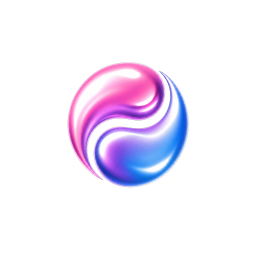

Companion pages for the Loop Forge channel. Prompts, workflows and notes from the experiments, published in full so you can reproduce them rather than take my word for it.
Fourteen named camera shots composed out of H3's twelve documented camera primitives, with the exact prompt behind each one, the character reference plates and the ComfyUI workflow.